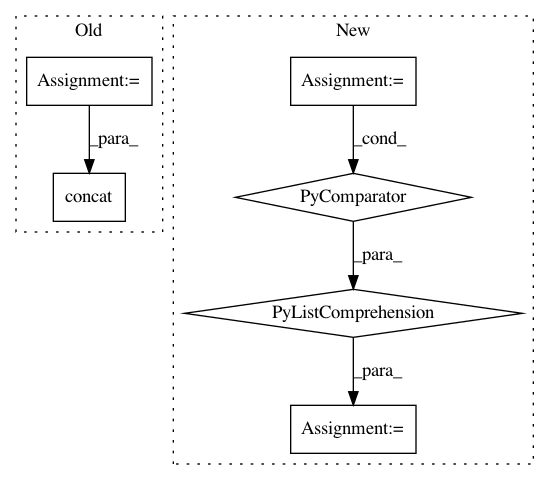

6b48055fdfe3c628833ed26ca394ef2fb1d97f82,niftynet/layer/resampler.py,ResamplerLayer,_resample_nearest,#ResamplerLayer#Any#Any#,58
Before Change
spatial_coords = self.boundary_func(
tf.round(sample_coords), in_spatial_size)
batch_ids = tf.reshape(
tf.range(batch_size), [batch_size] + [1] * (out_spatial_rank + 1))
batch_ids = tf.tile(batch_ids, [1] + out_spatial_size + [1])
output = tf.gather_nd(
inputs, tf.concat([batch_ids, spatial_coords], -1))
if self.boundary == "ZERO":
scale = 1. / (tf.constant(in_spatial_size, dtype=tf.float32) - 1)
After Change
spatial_coords = self.boundary_func(
tf.round(sample_coords), in_spatial_size)
output = tf.stack([
tf.gather_nd(img, coords) for (img, coords) in
zip(tf.unstack(inputs), tf.unstack(spatial_coords))])
if self.boundary == "ZERO":
scale = 1. / (tf.constant(in_spatial_size, dtype=tf.float32) - 1)
mask = tf.logical_and(
In pattern: SUPERPATTERN
Frequency: 4
Non-data size: 6
Instances
Project Name: NifTK/NiftyNet
Commit Name: 6b48055fdfe3c628833ed26ca394ef2fb1d97f82
Time: 2017-10-26
Author: wenqi.li@ucl.ac.uk
File Name: niftynet/layer/resampler.py
Class Name: ResamplerLayer
Method Name: _resample_nearest
Project Name: bambinos/bambi
Commit Name: c58c67e38deee612ba244f719b82780aa3928158
Time: 2016-08-28
Author: tyarkoni@gmail.com
File Name: bambi/models.py
Class Name: Model
Method Name: build
Project Name: NeuroTechX/moabb
Commit Name: 10b226e074be4ce84cc2436a693a46783da138f2
Time: 2018-02-26
Author: vjayaram@danube.is.localnet
File Name: moabb/viz/meta_analysis.py
Class Name:
Method Name: rmANOVA
Project Name: NifTK/NiftyNet
Commit Name: 984d17836d7a6240942cd44f2f61c92a427bb9bb
Time: 2018-04-24
Author: z.eaton-rosen@ucl.ac.uk
File Name: niftynet/layer/crop.py
Class Name: CropLayer
Method Name: layer_op